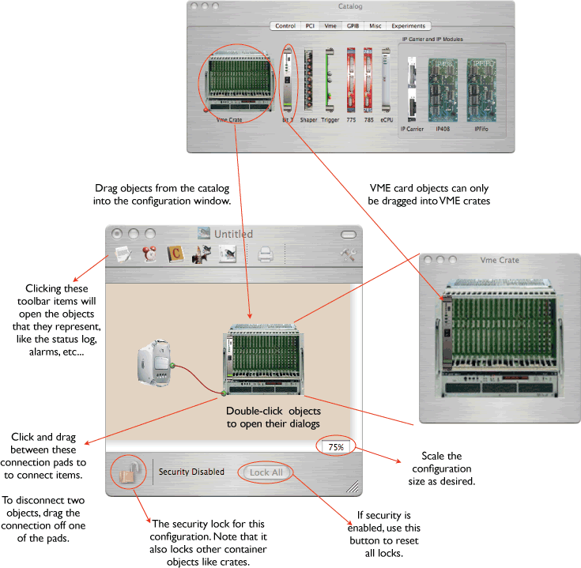

To use ORCA you must make design a configuration of objects that matches your needs. First open a new configuration from the Files->New menu. Then open the object Catalog from the Windows->Catalog. Here is what the catalog looks like:

Drag the objects that you need into the Configuration window. Use the mouse to connect the objects to define the flow of data and commands.
Some of the objects, like the Vme crate and the Mac object, are container objects that hold other objects. To add objects to these container objects, open them up by double-clicking on them. A dialog will appear into which you can drag objects from the catalog.
To actually take data you must not only set up a hardware configuration as the above example, but also a data collection chain. A typical set of data collection items would consist of a Run Control, Data Taker, Data Collection, and Disk File objects connected together thus:
There are a number of keyboard short cuts that can be used when working with the configuration. For the most part the operation of dealing with moving, selecting, and deleting objects is the same as dealing with the MacOS Finder.
| Opt-drag | makes a duplicate of the object(s) being dragged |
| Shift while drag selecting | adds objects to the selection, or removes from selection objects already selected |
| Shift while click selecting | adds object to the selection, or removes from selection if already selected |
| Shift key while starting ORCA | ORCA starts without loading a configuration |
| Cmd-Shift > | shifts dialog to next object of that type |
| Cmd-Shift < | shifts dialog to last object of that type |
| Cntrl-C | copy selected object(s) to the pasteboard |
| Cntrl-X | delete selected objects(s) |
| Cntrl-V | paste objects from pasteboard |
| Cmd-A | select all objects |
| delete | delete selected object(s) |